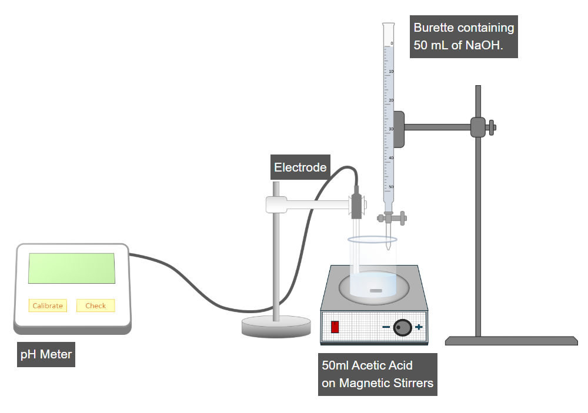

Determination of pKa of Acetic Acid by pH Titration Method

Step 1: Calibration of the pH Meter
- Switch on the pH meter.
- Press the Calibrate button to perform calibration.
- Ensure that the pH meter is properly calibrated before proceeding.
Step 2: Measurement of Initial pH of Acetic Acid
- Place the pH electrode into the beaker containing the acetic acid solution.
- Press the Check button on the pH meter.
- Record the initial pH value of acetic acid.
Step 3: Titration with Sodium Hydroxide (NaOH)
- Open the burette valve to add 2 mL of NaOH solution into the beaker.
- Switch on the magnetic stirrer by clicking the red button.
- Allow proper mixing and record the new pH reading.
Step 4: Incremental Addition of NaOH and pH Recording
- Again, add 2 mL of NaOH into the beaker using the burette valve.
- Allow the solution to mix properly using the magnetic stirrer.
- Record the new pH value.
- Repeat the incremental addition of 2 mL NaOH each time.
- Continue the process and record pH values for a total of 25 additions.
Step 5: Calculation of pKa Value
- After completing all titration steps, click on Next Step.
- Use the recorded pH values and corresponding NaOH volumes to calculate the pKa value of acetic acid.